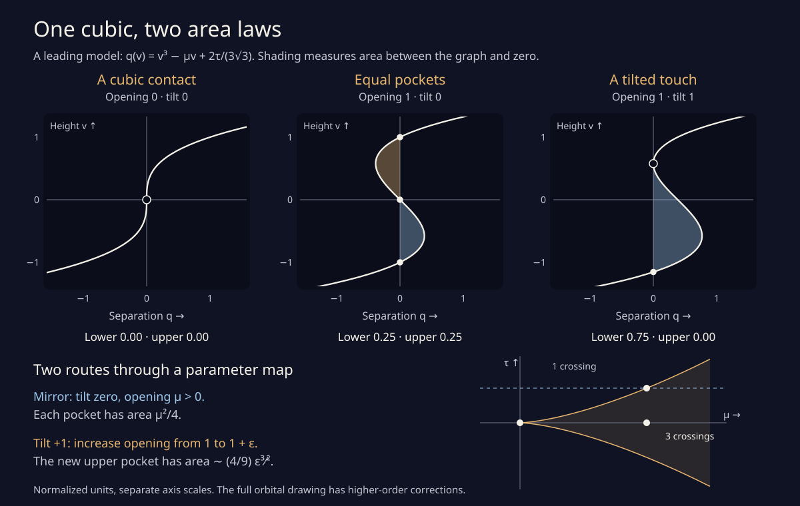

One cubic, two area laws
A small pocket appears when two branches of a drawing meet, then separate. With a mirror intact, two equal pockets open together. Break the mirror, and one is born on its own. A single cubic model connects these two ways to grow.
This picture follows the leading model of the orbital contact. Its units are rescaled. The model’s areas and parameter boundary are exact mathematical formulas; the complete orbital drawing has higher-order corrections.
Increase the opening to make room between the branches. The parameter map moves from left to right.
Zero keeps the mirror. A tilt shifts the separation sideways; reversing it exchanges the two pockets.
Three crossings. Two equal pockets, with the mirror intact.
Pocket areas, in normalized square units:
Lower pocket
Upper pocket

Try the two routes
Start at “Cubic contact,” then increase the opening with tilt held at zero. Two equal pockets appear at once. Each has area μ²/4: doubling the opening multiplies its area by four.
Now start at “Tilted touch” and increase the opening a little beyond 1, keeping tilt at +1. The upper pocket is new; the lower one already exists. For a small increment ε = μ − 1, the new pocket’s area is approximately (4/9) ε3/2. Its height grows like the square root of the increment, and its separation grows like the increment. Their product gives the three-halves power.
One route passes through the tip of the parameter cusp. The other crosses a smooth boundary. Those different routes explain the different powers. Reversing the tilt reflects the picture and exchanges the upper and lower pockets.
The cubic and its areas
The graph is q(v) = v³ − μv + 2τ/(3√3). The opening μ changes its middle slope; the tilt τ shifts the graph sideways. Three distinct roots occur exactly when μ³ > τ². Equality with μ positive gives a quadratic touch. At μ = τ = 0 all three roots meet.
If consecutive roots are a and b, and the remaining root is c, the pocket between them has area |c − (a+b)/2| (b−a)³/6. This exact formula stays useful even when a tiny pocket makes two roots almost coincide. At the tilted touch, the surviving pocket has area 3/4; the new one has area zero.
At a fixed positive opening, tilt grows one pocket and shrinks the other. Their combined area increases as the tilt moves away from zero, from μ²/2 at the mirror to 3μ²/4 at either touch. This describes the two local model pockets.
The mathematical boundary and area identities are exact for this cubic. The slider readouts and root locations use floating-point arithmetic. A relative rounding tolerance recognizes the boundary. Nothing animates, and the sliders support their native arrow, Home, and End keys.
How does this return to the orbital drawing?
Near the original mirror contact, height, blend weight, and phase can be rescaled so that the branch separation approaches this cubic. The small scale h multiplies height by h, weight change by h², and phase by h³. The area then carries a factor h⁴. In particular, after a positive weight change δ, phase divided by δ3/2 selects the limiting shape, and area carries a factor δ².
The mathematical note derives the common limit and both area laws, and compares them numerically with the actual orbital branches. The golden cusp is the model’s exact boundary. The finite-scale orbital boundary has corrections; this page is not a new census of its events or regions.